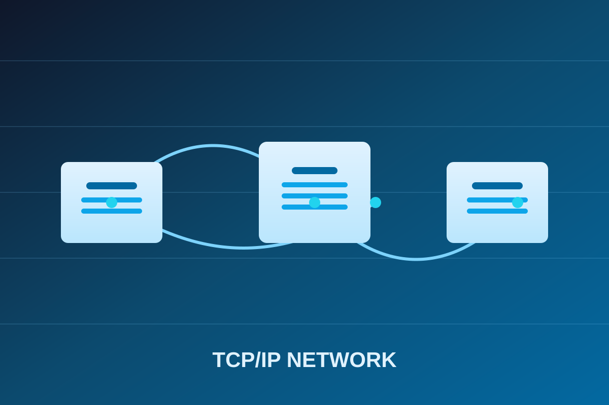

Apprenez les fondamentaux des réseaux, la maintenance des serveurs et le langage binaire.
Commencer l’apprentissage
TCP/IP est la colonne vertébrale d'Internet. Il définit comment les données sont échangées entre les machines.
+-------------------+
| Application (HTTP)| ← Couche 4
+-------------------+
| Transport (TCP) | ← Couche 3
+-------------------+
| Internet (IP) | ← Couche 2
+-------------------+
| Accès Réseau | ← Couche 1
+-------------------+
Ouvrez un terminal et tapez :
ping google.comCela envoie des paquets ICMP à Google et mesure le temps de réponse.
Un serveur est une machine ou un programme qui fournit des services à d'autres machines (clients).
Sur Ubuntu, installez Nginx avec :
sudo apt update
sudo apt install nginx
sudo systemctl start nginxActivez le pare-feu UFW :
sudo ufw allow 80/tcp
sudo ufw enableLe binaire est le langage de base des ordinateurs, composé de 0 et de 1.
Le nombre décimal 5 est 101 en binaire.
Exemple de programme en assembleur (x86) :
section .data
num1 dd 10
num2 dd 20
result dd 0
section .text
global _start
_start:
mov eax, [num1]
add eax, [num2]
mov [result], eax
mov eax, 1
int 0x80TCP/IP est utilisé pour les requêtes HTTP. Par exemple, lorsque vous visitez un site web, votre navigateur envoie une requête TCP au serveur.
Créez un serveur web simple avec Python :
from http.server import HTTPServer, SimpleHTTPRequestHandler
server = HTTPServer(('localhost', 8000), SimpleHTTPRequestHandler)
server.serve_forever()Accédez à http://localhost:8000 dans votre navigateur.